Undergraduate Researcher @ Oregon State University • HiPCastor Group
Hello, I am a fourth-year undergraduate computer science student in Oregon State University’s Honors College (OSU). Since January 2025, I have been employed as a computer systems researcher with Professor Renato Figueiredo and am an incoming Fall intern at PNNL. Previously, I worked as a farmhand.
My research has been primarily in serverless computing, enabling scientists to compose complex, scientific workflows without the need for computing expertise. Recently, this has led me to research in agentic-AI for science.
I deeply enjoy working on interdisciplinary projects in problem-spaces that have a tangible impact on sustainability and technological democratization. I have been fortunate to have been involved in a number of such collaborations, including wildlife conservation efforts with the University of Osaka and Aomori University in Japan; ecological forecasting with Virginia Tech; smart farming with the agriculture department at OSU; and wildlife monitoring and education accessibility in Western Kenya through an ASU program.
I am currently looking for PhD programs starting in Fall 2027, where I can work at the intersection of systems research, agents, and scientific applications.
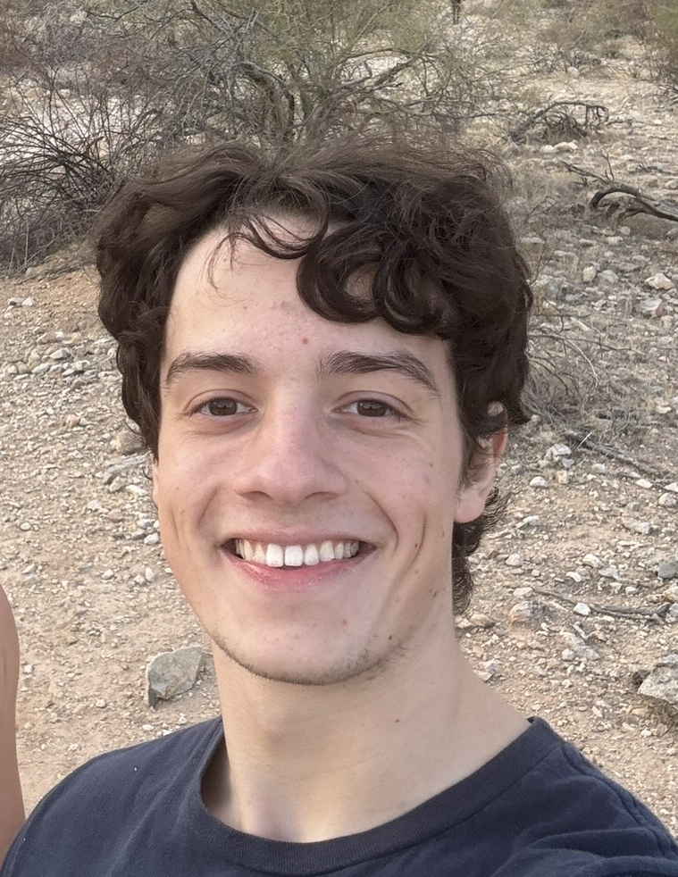
IEEE eScience 2026 (accepted, to appear)
CENTRA 9
Global Intensive Experience, Ira A. Fulton Schools of Engineering
Selected to participate in ASU’s Global Intensive Experience in Western Kenya, contributing to an offline digital library with 300+ educational resources for rural schools and orphanages, and conservation technology development for wildlife monitoring with Maasai Mara communities.
FaaSr enables scientists to compose complex, multi-step workflows in serverless environments without computing infrastructure expertise. It simplifies the deployment and orchestration of functions across diverse platforms.
I refactored the runtime of the middleware from R to Python, and designed an RPC mechanism to the backend's user function handling that allowed for language extensibility (we currently support Python, R, and Julia). My architectural changes increased the flexibility of the system, supporting a co-authored paper accepted at IEEE eScience 2026, as well as an abstract at CENTRA 9.
This work is supported by the National Science Foundation under awards OAC-2450241 and OAC-2311124.
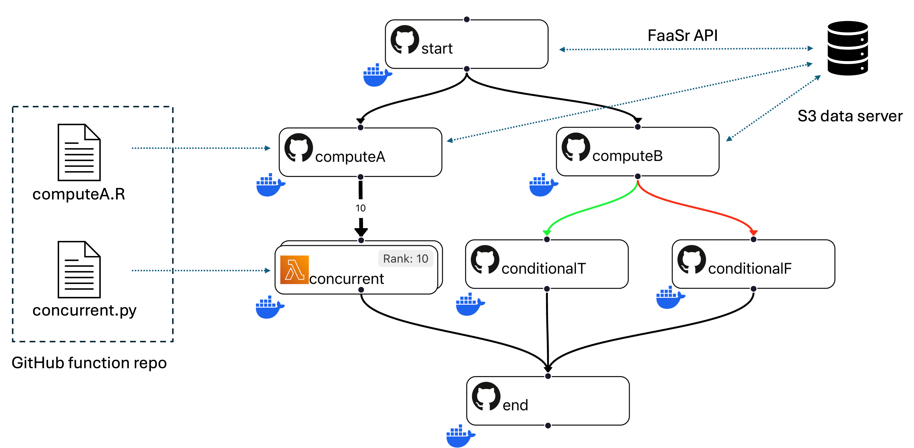
A 32-bit RISC-V single-cycle processor implemented in Verilog that was adopted into the Fall 2025 ECE572 (Computer Architecture) curriculum at Oregon State University.
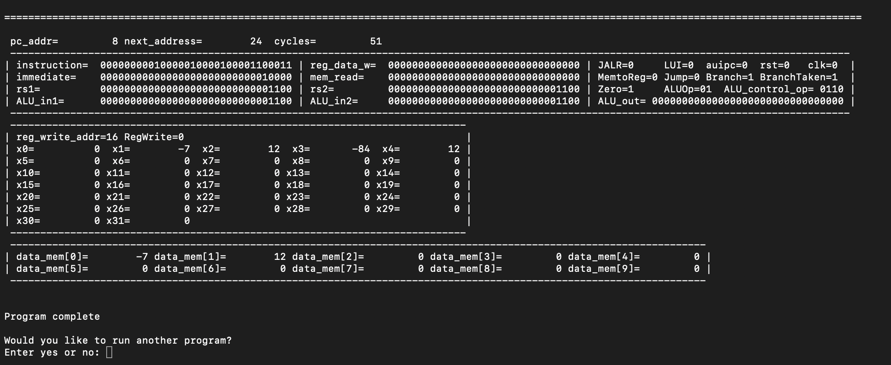
When I'm not working, I like to roadtrip and spend time outdoors, mostly in the PNW and Central California.
Here are a few photos from some of my favorite trails:
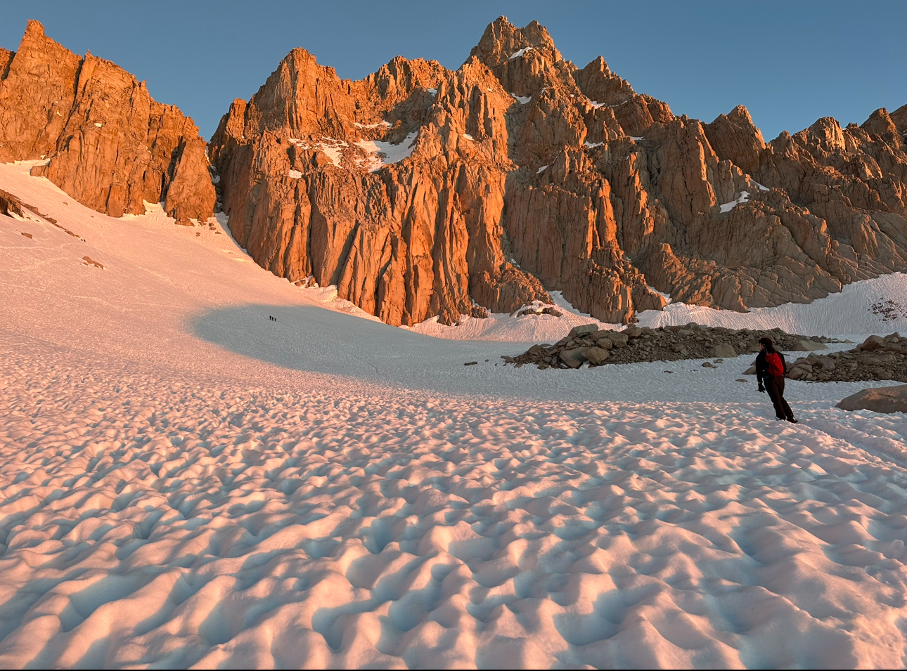
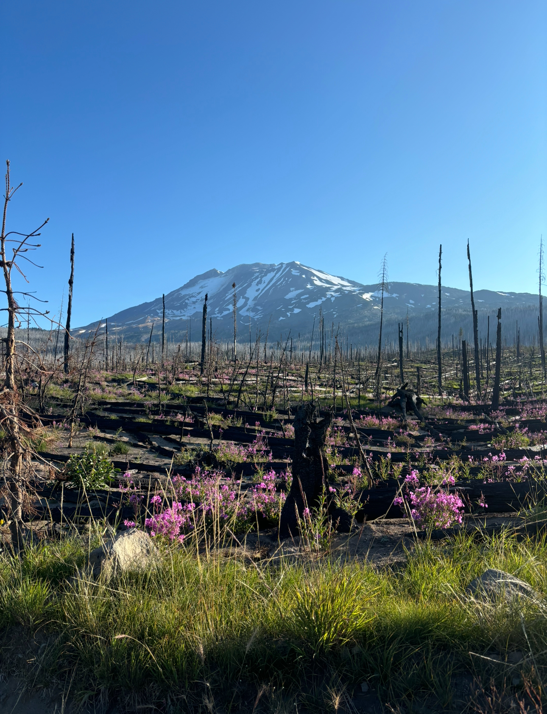
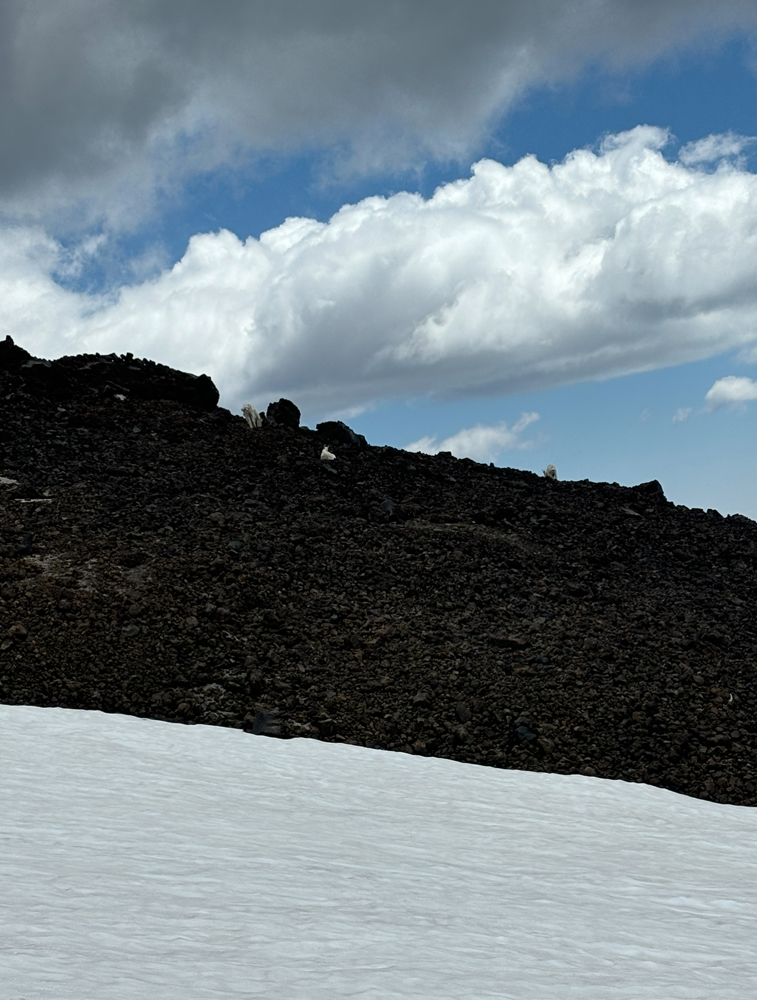
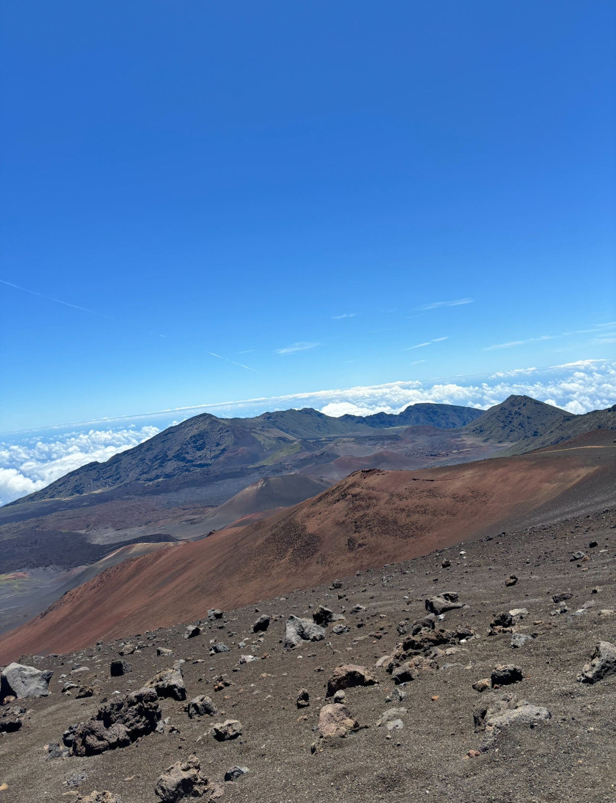
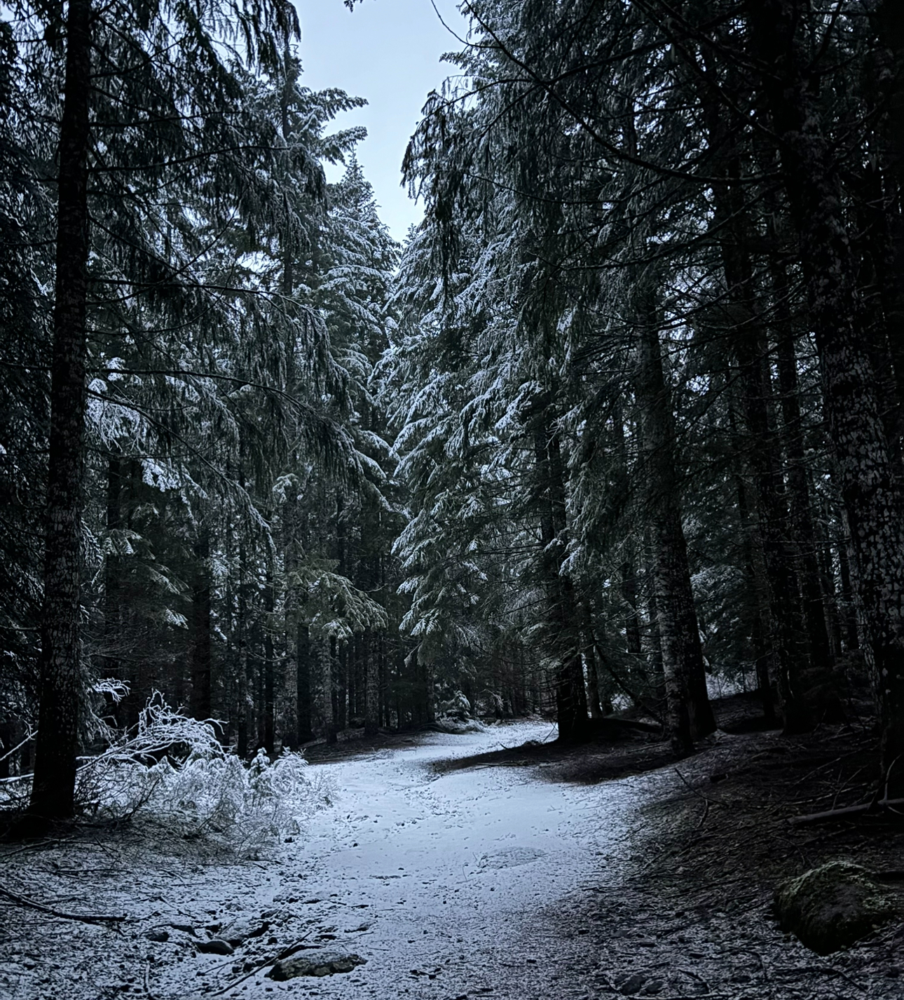
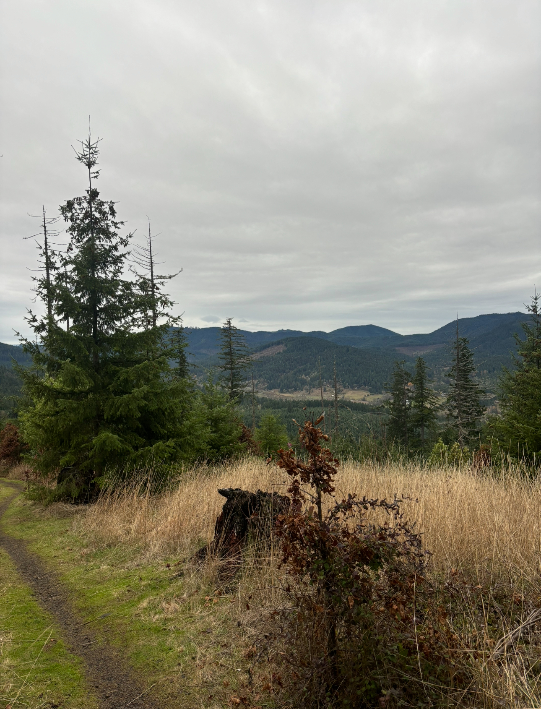
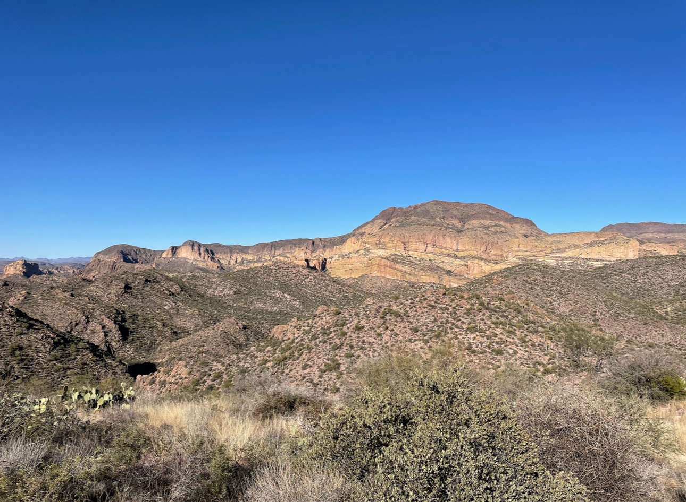
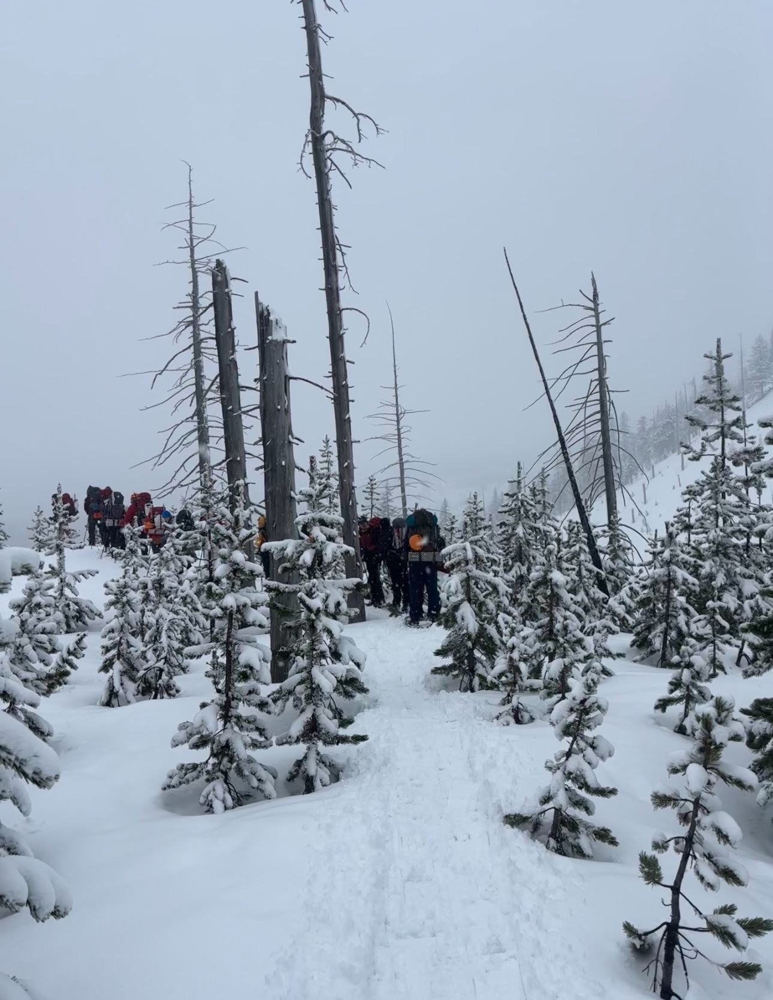
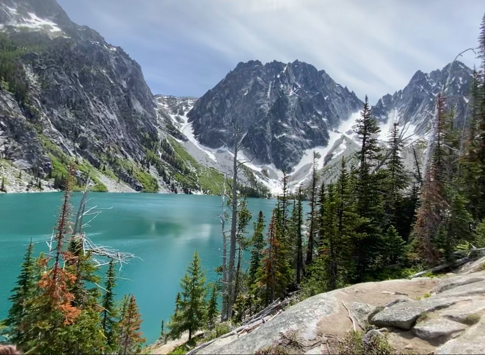